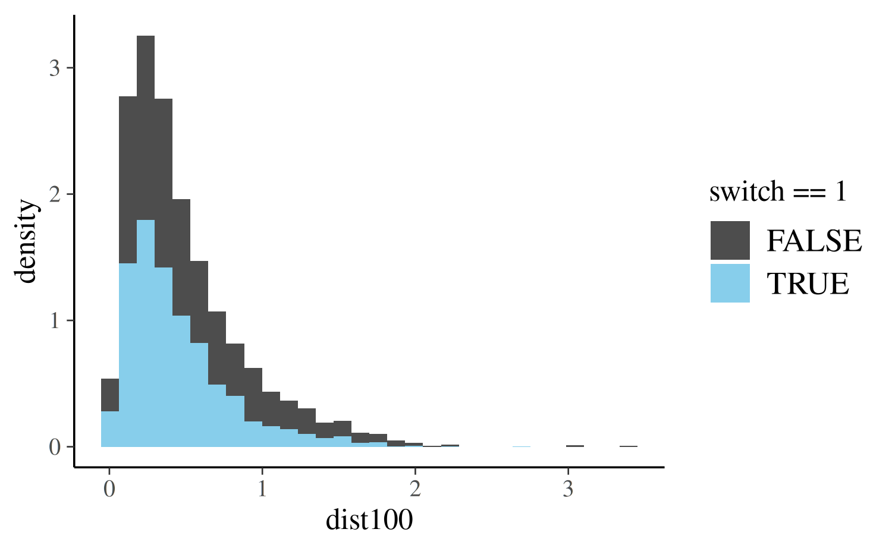
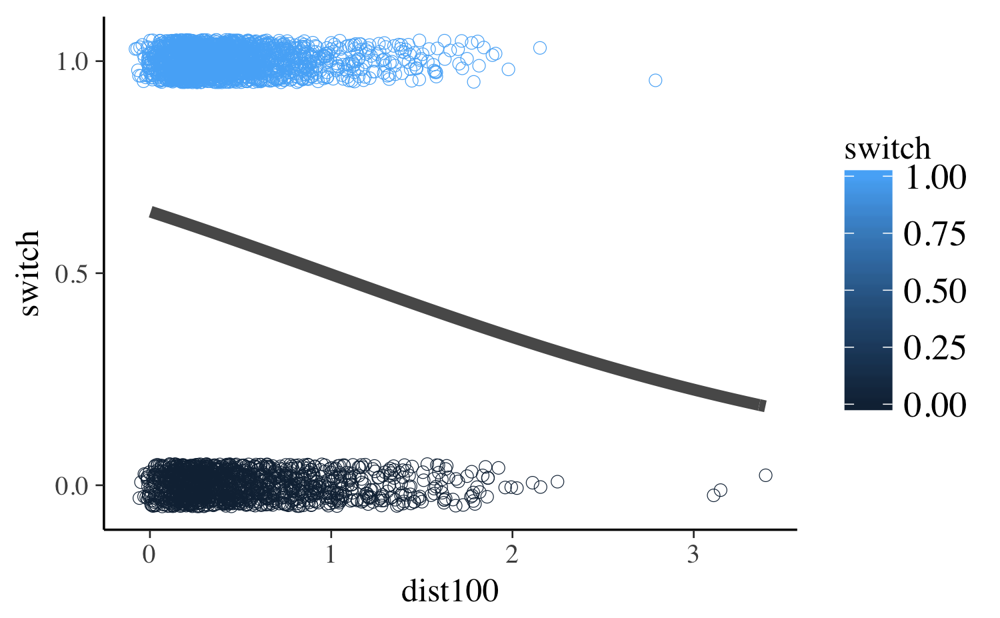
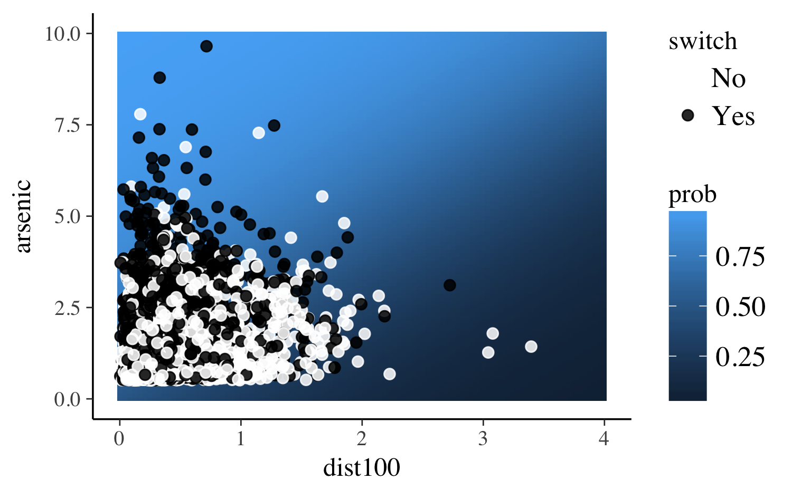
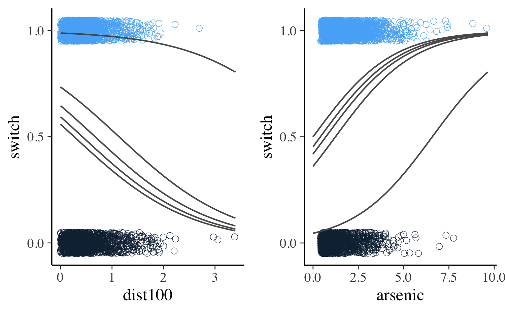

Estimating Generalized Linear Models for Binary and Binomial Data with rstanarm
Jonah Gabry and Ben Goodrich
2025-12-01
Source:vignettes/binomial.Rmd
binomial.RmdIntroduction
This vignette explains how to estimate generalized linear models
(GLMs) for binary (Bernoulli) and Binomial response variables using the
stan_glm function in the rstanarm
package.
The four steps of a Bayesian analysis are
- Specify a joint distribution for the outcome(s) and all the unknowns, which typically takes the form of a marginal prior distribution for the unknowns multiplied by a likelihood for the outcome(s) conditional on the unknowns. This joint distribution is proportional to a posterior distribution of the unknowns conditional on the observed data
- Draw from posterior distribution using Markov Chain Monte Carlo (MCMC).
- Evaluate how well the model fits the data and possibly revise the model.
- Draw from the posterior predictive distribution of the outcome(s) given interesting values of the predictors in order to visualize how a manipulation of a predictor affects (a function of) the outcome(s).
Steps 3 and 4 are covered in more depth by the vignette entitled “How to Use the rstanarm Package”. This vignette focuses on Step 1 when the likelihood is the product of conditionally independent binomial distributions (possibly with only one trial per observation).
Likelihood
For a binomial GLM the likelihood for one observation \(y\) can be written as a conditionally binomial PMF \[\binom{n}{y} \pi^{y} (1 - \pi)^{n - y},\] where \(n\) is the known number of trials, \(\pi = g^{-1}(\eta)\) is the probability of success and \(\eta = \alpha + \mathbf{x}^\top \boldsymbol{\beta}\) is a linear predictor. For a sample of size \(N\), the likelihood of the entire sample is the product of \(N\) individual likelihood contributions.
Because \(\pi\) is a probability, for a binomial model the link function \(g\) maps between the unit interval (the support of \(\pi\)) and the set of all real numbers \(\mathbb{R}\). When applied to a linear predictor \(\eta\) with values in \(\mathbb{R}\), the inverse link function \(g^{-1}(\eta)\) therefore returns a valid probability between 0 and 1.
The two most common link functions used for binomial GLMs are the logit and probit functions. With the logit (or log-odds) link function \(g(x) = \ln{\left(\frac{x}{1-x}\right)}\), the likelihood for a single observation becomes
\[\binom{n}{y}\left(\text{logit}^{-1}(\eta)\right)^y \left(1 - \text{logit}^{-1}(\eta)\right)^{n-y} = \binom{n}{y} \left(\frac{e^{\eta}}{1 + e^{\eta}}\right)^{y} \left(\frac{1}{1 + e^{\eta}}\right)^{n - y}\]
and the probit link function \(g(x) = \Phi^{-1}(x)\) yields the likelihood
\[\binom{n}{y} \left(\Phi(\eta)\right)^{y} \left(1 - \Phi(\eta)\right)^{n - y},\]
where \(\Phi\) is the CDF of the
standard normal distribution. The differences between the logit and
probit functions are minor and – if, as rstanarm does
by default, the probit is scaled so its slope at the origin matches the
logit’s – the two link functions should yield similar results. With
stan_glm, binomial models with a logit link function can
typically be fit slightly faster than the identical model with a probit
link because of how the two models are implemented in Stan. Unless the
user has a specific reason to prefer the probit link, we recommend the
logit simply because it will be slightly faster and more numerically
stable.
In theory, there are infinitely many possible link functions,
although in practice only a few are typically used. Other common choices
are the cauchit and cloglog functions, which
can also be used with stan_glm (every link function
compatible withglm will work with
stan_glm).
Priors
A full Bayesian analysis requires specifying prior distributions
\(f(\alpha)\) and \(f(\boldsymbol{\beta})\) for the intercept
and vector of regression coefficients. When using stan_glm,
these distributions can be set using the prior_intercept
and prior arguments. The stan_glm function
supports a variety of prior distributions, which are explained in the
rstanarm documentation
(help(priors, package = 'rstanarm')).
As an example, suppose we have \(K\)
predictors and believe — prior to seeing the data — that \(\alpha, \beta_1, \dots, \beta_K\) are as
likely to be positive as they are to be negative, but are highly
unlikely to be far from zero. These beliefs can be represented by normal
distributions with mean zero and a small scale (standard deviation). To
give \(\alpha\) and each of the \(\beta\)s this prior (with a scale of 1,
say), in the call to stan_glm we would include the
arguments prior_intercept = normal(0,1) and
prior = normal(0,1).
If, on the other hand, we have less a priori confidence that the parameters will be close to zero then we could use a larger scale for the normal distribution and/or a distribution with heavier tails than the normal like the Student t distribution. Step 1 in the “How to Use the rstanarm Package” vignette discusses one such example.
Posterior
With independent prior distributions, the joint posterior distribution for \(\alpha\) and \(\boldsymbol{\beta}\) is proportional to the product of the priors and the \(N\) likelihood contributions:
\[f\left(\alpha,\boldsymbol{\beta} | \mathbf{y},\mathbf{X}\right) \propto f\left(\alpha\right) \times \prod_{k=1}^K f\left(\beta_k\right) \times \prod_{i=1}^N { g^{-1}\left(\eta_i\right)^{y_i} \left(1 - g^{-1}\left(\eta_i\right)\right)^{n_i-y_i}}.\]
This is posterior distribution that stan_glm will draw
from when using MCMC.
Logistic Regression Example
When the logit link function is used the model is often referred to
as a logistic regression model (the inverse logit function is the CDF of
the standard logistic distribution). As an example, here we will show
how to carry out a few parts of the analysis from Chapter 5.4 of Gelman and Hill
(2007) using stan_glm.
Gelman and Hill describe a survey of 3200 residents in a small area of Bangladesh suffering from arsenic contamination of groundwater. Respondents with elevated arsenic levels in their wells had been encouraged to switch their water source to a safe public or private well in the nearby area and the survey was conducted several years later to learn which of the affected residents had switched wells. The goal of the analysis presented by Gelman and Hill is to learn about the factors associated with switching wells.
To start, we’ll use dist (the distance from the
respondent’s house to the nearest well with safe drinking water) as the
only predictor of switch (1 if switched, 0 if not). Then
we’ll expand the model by adding the arsenic level of the water in the
resident’s own well as a predictor and compare this larger model to the
original.
After loading the wells data, we first rescale the
dist variable (measured in meters) so that it is measured
in units of 100 meters. If we leave dist in its original
units then the corresponding regression coefficient will represent the
effect of the marginal meter, which is too small to have a useful
interpretation.
Before estimating any models we can visualize the distribution of
dist100 in the data:
ggplot(wells, aes(x = dist100, y = ..density.., fill = switch == 1)) +
geom_histogram() +
scale_fill_manual(values = c("gray30", "skyblue"))
In the plot above the blue bars correspond to the 1737 residents who
said they switched wells and darker bars show the distribution of
dist100 for the 1283 residents who didn’t switch. As we
would expect, for the residents who switched wells, the distribution of
dist100 is more concentrated at smaller distances.
A Bayesian version of Gelman and Hill’s initial logistic regression
model can be estimated using the stan_glm function. Here
we’ll use a Student t prior with 7 degrees of freedom and a scale of
2.5, which, as discussed above, is a reasonable default prior when
coefficients should be close to zero but have some chance of being
large.
t_prior <- student_t(df = 7, location = 0, scale = 2.5)
fit1 <- stan_glm(switch ~ dist100, data = wells,
family = binomial(link = "logit"),
prior = t_prior, prior_intercept = t_prior,
cores = 2, seed = 12345)(Intercept) dist100
0.605 -0.621 The formula, data and family
arguments to stan_glm are specified in exactly the same way
as for glm. We’ve also added the optional additional
arguments chains (how many chains we want to execute),
cores (how many cores we want the computer to utilize) and
seed (for reproducibility). You can read about other
possible arguments in the stan_glm documentation
(help(stan_glm, package = 'rstanarm')).
To get a sense for the uncertainty in our estimates we can use the
posterior_interval function to get Bayesian uncertainty
intervals. The uncertainty intervals are computed by finding the
relevant quantiles of the draws from the posterior distribution. For
example, to compute 50% intervals we use:
round(posterior_interval(fit1, prob = 0.5), 2) 25% 75%
(Intercept) 0.57 0.65
dist100 -0.69 -0.56For more on posterior_interval and interpreting the
parameter estimates from a Bayesian model see Step 2 in the “How to Use the rstanarm
Package” vignette.
Using the coefficient estimates we can plot the predicted probability
of switch = 1 (as a function of dist100)
together with the observed outcomes:
# Predicted probability as a function of x
pr_switch <- function(x, ests) plogis(ests[1] + ests[2] * x)
# A function to slightly jitter the binary data
jitt <- function(...) {
geom_point(aes_string(...), position = position_jitter(height = 0.05, width = 0.1),
size = 2, shape = 21, stroke = 0.2)
}
ggplot(wells, aes(x = dist100, y = switch, color = switch)) +
scale_y_continuous(breaks = c(0, 0.5, 1)) +
jitt(x="dist100") +
stat_function(fun = pr_switch, args = list(ests = coef(fit1)),
size = 2, color = "gray35")
The plot shows that under this model the predicted probability of
switching is a decent bit above 50% for residents living very close to
wells with safe drinking water. As expected, larger values of
dist100 are associated with lower predicted probabilities
of switching. At the extreme (\(\approx
300\) meters), the probability is about 25%.
Next, we incorporate an additional predictor into the model: the
arsenic level of water in the respondent’s well. According to Gelman and
Hill, “At the levels present in the Bangladesh drinking water, the
health risks from arsenic are roughly proportional to exposure, and so
we would expect switching to be more likely from wells with high arsenic
levels” (pg. 90). We only need to change the formula, so we can use the
update function:
fit2 <- update(fit1, formula = switch ~ dist100 + arsenic) (Intercept) dist100 arsenic
0.002 -0.896 0.462 As expected the coefficient on arsenic is positive. The
plot below shows distance on the x-axis and arsenic level on the y-axis
with the predicted probability of well-switching mapped to the color of
the background tiles (the lighter the color the higher the probability).
The observed value of switch is indicated by the color of
the points.
pr_switch2 <- function(x, y, ests) plogis(ests[1] + ests[2] * x + ests[3] * y)
grid <- expand.grid(dist100 = seq(0, 4, length.out = 100),
arsenic = seq(0, 10, length.out = 100))
grid$prob <- with(grid, pr_switch2(dist100, arsenic, coef(fit2)))
ggplot(grid, aes(x = dist100, y = arsenic)) +
geom_tile(aes(fill = prob)) +
geom_point(data = wells, aes(color = factor(switch)), size = 2, alpha = 0.85) +
scale_fill_gradient() +
scale_color_manual("switch", values = c("white", "black"), labels = c("No", "Yes"))
We can see that the black points (switch=1) are
predominantly clustered in the upper-left region of the plot where the
predicted probability of switching is highest.
Another way we can visualize the data and model is to follow Gelman and Hill and create separate plots for varying the arsenic level and distance. Here we’ll plot curves representing the predicted probability of switching for the minimum, maximum and quartile values of both variables.
# Quantiles
q_ars <- quantile(wells$dist100, seq(0, 1, 0.25))
q_dist <- quantile(wells$arsenic, seq(0, 1, 0.25))
base <- ggplot(wells) + xlim(c(0, NA)) +
scale_y_continuous(breaks = c(0, 0.5, 1))
vary_arsenic <- base + jitt(x="arsenic", y="switch", color="switch")
vary_dist <- base + jitt(x="dist100", y="switch", color="switch")
for (i in 1:5) {
vary_dist <-
vary_dist + stat_function(fun = pr_switch2, color = "gray35",
args = list(ests = coef(fit2), y = q_dist[i]))
vary_arsenic <-
vary_arsenic + stat_function(fun = pr_switch2, color = "gray35",
args = list(ests = coef(fit2), x = q_ars[i]))
}
bayesplot_grid(vary_dist, vary_arsenic,
grid_args = list(ncol = 2))
We can compare our two models (with and without arsenic)
using an approximation to Leave-One-Out (LOO) cross-validation, which is
a method for estimating out of sample predictive performance and is
implemented by the loo function in the loo
package:
(loo1 <- loo(fit1))
Computed from 4000 by 3020 log-likelihood matrix.
Estimate SE
elpd_loo -2040.1 10.4
p_loo 2.0 0.0
looic 4080.2 20.8
------
MCSE of elpd_loo is 0.0.
MCSE and ESS estimates assume independent draws (r_eff=1).
All Pareto k estimates are good (k < 0.7).
See help('pareto-k-diagnostic') for details.
(loo2 <- loo(fit2))
Computed from 4000 by 3020 log-likelihood matrix.
Estimate SE
elpd_loo -1968.4 15.7
p_loo 3.2 0.1
looic 3936.9 31.3
------
MCSE of elpd_loo is 0.0.
MCSE and ESS estimates assume independent draws (r_eff=1).
All Pareto k estimates are good (k < 0.7).
See help('pareto-k-diagnostic') for details.
loo_compare(loo1, loo2) elpd_diff se_diff
fit2 0.0 0.0
fit1 -71.7 12.2 These results favor fit2 over fit1, as the
estimated difference in elpd (the expected log pointwise
predictive density for a new dataset) is so much larger than its
standard error. LOO penalizes models for adding additional predictors
(this helps counter overfitting), but in this case fit2
represents enough of an improvement over fit1 that the
penalty for including arsenic is negligible (as it should
be if arsenic is an important predictor).
The vignette for the stan_lm
function also has an example of using the loo function
where the results are quite a bit different from what we see here and
some important additional considerations are discussed.
Conditional Logit Models
The previous example relies on the fact that observations are
plausibly conditionally independent. In contrast, so-called
“case-control studies” require that there are a fixed number of
successes and failures within each stratum, and the question is
which members of each stratum succeed and fail? The
stan_clogit function estimates such a model and is very
similar to the clogit function in the
survival package. The main syntactical difference is
that the clogit function requires that the user call the
strata function in the model formula, whereas the
stan_clogit function has a required strata
argument. In addition, in the stan_clogit case the data
must be sorted by the variable passed to strata. The
advantage to these changes is that stan_clogit can
optionally utilize the multilevel syntax from the lme4
package to specify group-specific terms, rather than the more limited
multilevel structure supported by the frailty function in
the survival package. The vignette for the stan_glmer function
discusses the lme4-style syntax in more detail. For example,
post <- stan_clogit(case ~ spontaneous + induced + (1 | parity),
data = infert[order(infert$stratum), ], # order necessary
strata = stratum, QR = TRUE,
cores = 2, seed = 12345)
poststan_clogit
family: binomial [clogit]
formula: case ~ spontaneous + induced + (1 | parity)
observations: 248
------
Median MAD_SD
spontaneous 2.0 0.3
induced 1.4 0.3
Error terms:
Groups Name Std.Dev.
parity (Intercept) 1.4
Num. levels: parity 6
------
* For help interpreting the printed output see ?print.stanreg
* For info on the priors used see ?prior_summary.stanregThe posterior predictions are also constrained such that there is exactly one success (in this case) for each of the strata and thus the posterior distribution of the probabilities are also so constrained:
PPD <- posterior_predict(post)
stopifnot(rowSums(PPD) == max(infert$stratum))
PLP <- posterior_linpred(post, transform = TRUE)
stopifnot(round(rowSums(PLP)) == max(infert$stratum))Binomial Models
Although the example in this vignette focused on a binary response
variable, we can use nearly identical code if we have the sum of
multiple binary variables. For example, image a hypothetical dataset
similar to the well-switching data but spanning multiple villages. Each
observation (each row) of this data.frame corresponds to an
entire village: switch[i] is the number of ‘yes’ responses
to the well-switching question for village i,
dist100[i] is the average distance to the closest well with
clean water for village i, etc. We also now have a variable
n where n[i] is the number of respondents from
village i.
For this data we can estimate a similar model to the one we used in the binary case by changing the formula to
cbind(switch, n - switch) ~ dist100 + arsenic
The left-hand side is now a 2-column matrix where the first column is the number of ‘yes’ responses and the second column is the number of ‘no’ responses (or more generally, the number of successes and number of failures). The same model can also be specified using the proportion of ‘yes’ responses and the total number of responses in each village. This corresponds to the formula
prop_switch ~ dist100 + arsenic
where prop_switch = switch / n is the proportion of
‘yes’ responses. The total number of responses is provided using the
weights argument. In this case we would add
weights = n to the call to stan_glm.
An example of a similar model can also be found in Step 1 of the “How to Use the rstanarm Package” vignette.
Going Further
In the hypothetical scenario above, if we also have access to the
observations for each individual in all of the villages (not just the
aggregate data), then a natural extension would be to consider a
multilevel model that takes advantage of the inherent multilevel
structure of the data (individuals nested within villages). The vignette for the stan_glmer function
discusses these models.